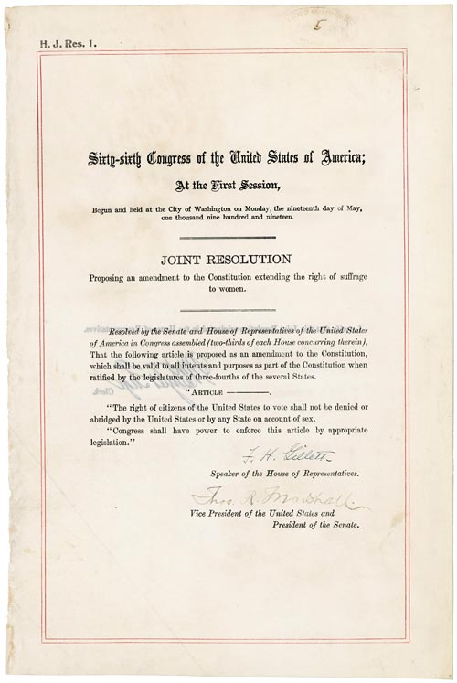
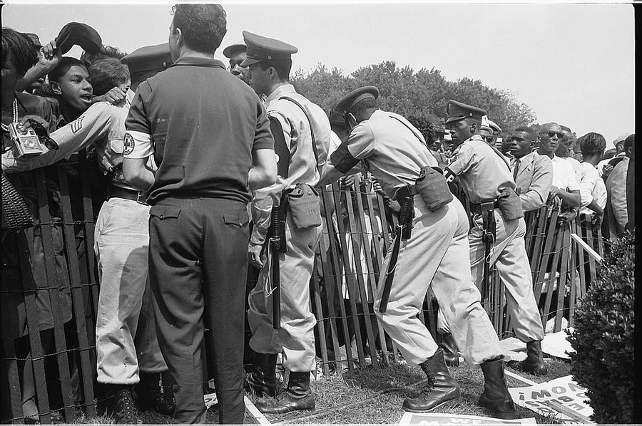

American History · Chapter lesson
Cold War, expanding participation, and civil rights
Read a short illustrated account, examine primary sources, and discuss the evidence.
1945–1968
Cold War, expanding participation, and civil rights
After World War II, Cold War rivalry with the Soviet Union shaped foreign policy and daily life, while Americans debated freedom and equality at home. Earlier, the Nineteenth Amendment had prohibited denying the vote on account of sex in 1920, but many women still faced racial and citizenship barriers. Civil rights organizers challenged segregation through community work, court cases, boycotts, and protest. The Civil Rights Act of 1964 and Voting Rights Act of 1965 addressed major forms of discrimination. Equal citizenship required sustained action, not just one law.
Discuss: How do individuals, communities, courts, and lawmakers each contribute to change?
National Archives: Civil Rights Act →
